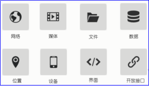
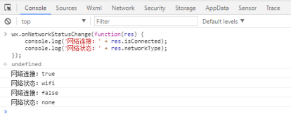

原文连接:https://www.cnblogs.com/rope/p/10750322.html
一、双花括号{{}}插值和MVVM模式
1.1 体会{{}}插值
index.wxml的标签不是html的那些标签，这里的view就是div。
{{}}这样的插值写法，叫做mustache语法。mustache是胡子的意思，因为{{}}像胡子。
<view class="container">
<view class="title">
我是首页 {{1 + 1}}
{{a}}年！
</view>
</view>
要在同名js文件下的data属性中定义：
Page({
data : {
a : 100
}
});所有的框架：Angular、React、Vue、ReactNative、小程序都是这样的“强耦合”的。
之前我们js操作html使用：document.getElementById()这样的“不耦合”的方式，但是反而编程麻烦。
不仅仅{{}}可以出现在文字的部分，还可以出现在属性值的双引号中：
<view class="box" style="width:{{a}}px;height:{{a}}px">我是盒子</view>1.2 体会MVVM模式
<button bindtap='add'>按我</button>监听直接写在标签上，bindtap表示绑定轻触事件。
注意，是bindtap="add"而不是：bindtap="add()"
'add'是一个函数，要定义在js文件中。
注意：改变数据不能直接改，如果这样写，a的确会变化，但是视图不会跟着变化！
Page({
data : {
a : 100
},
add(){
this.data.a++;
}
});必须使用this.setData()函数来改变data值，此时视图才能变化。
Page({
data : {
a : 100
},
add(){
this.setData({
a : this.data.a + 1
});
}
});数据变化了，视图会自动改变
我们学习的所有框架都是MVVM模式的，只需要关心数据，不需要关心视图，视图会自动变化。
二、数据双向绑定
2.1 调色板
先说一个知识点，用户的屏幕是750rpx。所以如果盒子750rpx宽度，一定撑满的，375rpx就是半屏。
slider组件：
index.wxss


.box{
width:350rpx;
height:350rpx;
margin:10px auto;
}
index.wxml：style行内样式的插值，实现双向数据绑定，就是data中的数据能够成为组件的默认数据。
添加一个bindchanging事件，这个事件从手册上查的。添加一个自定义属性，叫做data-ys来区分谁是谁。
注意，自定义属性必须以data-开头
<view class="container">
<view class="box" style="background-color:rgb({{r}},{{g}},{{b}})"></view>
<slider value="{{r}}" bindchanging="changeColor" data-ys="r" max="255" show-value block-size="18"/>
<slider value="{{g}}" bindchanging="changeColor" data-ys="g" max="255" show-value block-size="18"/>
<slider value="{{b}}" bindchanging="changeColor" data-ys="b" max="255" show-value block-size="18"/>
</view>
index.js 事件处理函数：
Page({
data : {
r : 100,
g : 200,
b : 123
},
changeColor(event){
this.setData({
[event.target.dataset.ys] : event.detail.value
})
}
});event.target.dataset.ys就是当前触发这个函数的组件身上的ys标识。
event.detail.value就是当前触发这个函数的组件的值。
也就是说，微信小程序的事件处理函数，一律不能传参！
<button bindtap="add(5)"></button>只能是：
<button bindtap="add" data-n="5"></button>2.2 微博发布框
class的动态实现：{{}}中不能出现复杂语句，比如不能有for、if、while、var，最复杂就是三元了。
<view class="container">
<textarea value="{{content}}" bindinput="inputHandler" placeholder="默认" auto-focus />
<view class="{{content.length > 40 ? 'danger' : ''}}">当前：{{content.length}}字/40字</view>
<view class="row">
<button disabled="{{content.length == 0 || content.length > 40}}">发布</button>
<button bindtap="clear" disabled="{{content.length == 0}}">清空</button>
</view>
</view>index.js
Page({
data : {
content : ""
},
//当用户输入文本的时候
inputHandler(event){
this.setData({
content : event.detail.value
});
},
//清空
clear(){
this.setData({ content: "" });
}
});index.wxss
.danger{color:red;font-weight: bold;}
.row{display: flex;}三、指令
3.1 wx:if指令
判定一个元素是否上树，而不是是否显示。
<view class="container">
<button wx:if="{{isAgree}}">注册</button>
</view>
当这个变量是true按钮上树，否则下树。
3.2 wx:for循环指令
命令一个标签进行循环，使用wx:for。
index.js数据：
Page({
data : {
arr: ["白板","幺鸡","二万","三饼","四条"]
}
});
index.wxml：
<view class="container">
<view wx:for="{{arr}}" wx:key="{{index}}">{{index}} - {{item}}</view>
</view>wx:for的值必须是数组，不能是对象，此时会自动遍历这个数组。
wx:for必须添加wx:key，表示循环这一项的标识，这个标识有什么用？连上服务器就有用了。增加效率
{{index}}、{{item}}是循环结构天生就有的，表示下标和项。
3.2.1 九九乘法表
因为空间太小，做五五乘法表：
<view class="row" wx:for="{{[1,2,3,4,5]}}" wx:key="{{index}}" wx:for-item="a">
<view class="col" wx:for="{{[1,2,3,4,5]}}" wx:key="{{index}}" wx:for-item="b">
{{a}} * {{b}} = {{a * b}}
</view>
</view>index.wxss
.row{ width:750rpx;display: flex;}
.col{ flex:1; text-align: center; font-size: 12px;border:1px solid #3bb; }3.2.2循环信息流
index.wxml
<view class="container">
<view class="mingxing">
<view class="box" wx:for="{{mingxing}}" wx:key="{{index}}">
<view class="left">
<image src="{{item.picurl}}"></image>
{{item.name}}
</view>
<view class="right">
{{item.info}}
</view>
</view>
</view>
</view>index.wxss
.box{
width:720rpx;display: flex; border:1px solid #3bb; margin:10px auto;font-size: 13px;
line-height: 24px; color:#333;padding:10px; box-sizing: border-box;
}
.left{flex:1;}
.left image{width:180rpx; height:180rpx;}
.right{flex:3; box-sizing: border-box;padding-left:10px;}index.js
Page({
data : {
mingxing : [
{
"name": "Angelababy",
"info": "Angelababy（杨颖），1989年2月28日出生于上海市",
"picurl": "/images/baby.png"
},
{
"name": "迪丽热巴",
"info": "迪丽热巴（Dilraba），1992年6月3日出生于新疆乌鲁木齐市",
"picurl": "/images/dilireba.png"
}
]
}
});3.2.3复选框-循环数组
<view class="container">
你的爱好:
<checkbox-group bindchange="checkboxChange">
<label wx:for="{{hobbys}}" wx:key="{{index}}">
<checkbox value="{{item}}" checked="{{false}}"/>
{{item}}
</label>
</checkbox-group>
<view>
你的爱好是：{{myhobbys}}
</view>
</view>Page({
data : {
hobbys : ["篮球" ,"足球","羽毛球"],
myhobbys : []
},
checkboxChange(event){
this.setData({
myhobbys: event.detail.value
});
}
});3.2.4操作数组-增删改查
<view class="container">
<input placeholder="请填写学生名字" auto-focus bindinput="inputHandler"/>
<button bindtap="addstudent">增加</button>
<view wx:for="{{student}}" wx:key="{{item.id}}" style="display:flex;">
<view>{{item.name}}</view>
<button data-id="{{item.id}}" bindtap="delstudent">删除</button>
</view>
</view>Page({
data : {
student : [
{"id": 1, "name": "小明"},
{"id": 2, "name": "小红"},
{"id": 3, "name": "小刚"}
],
//将来被添加的学生名字
needAddStudentName : ""
},
delstudent(event){
const id = event.target.dataset.id;
this.setData({
student: this.data.student.filter(item => item.id != id)
});
},
inputHandler(event){
this.setData({
needAddStudentName : event.detail.value
});
},
addstudent(){
const name = this.data.needAddStudentName;
this.setData({
student: [
...this.data.student,
{id : ~~(Math.random() * 100), name }
]
});
}
});四、小程序API
4.1认识小程序的API
微信提供了非常多的API，可以方便的调起微信提供的能力，如获取用户信息，本地存储，支付功能等。原理就是将JavaScript翻译为Java、OC语言。

4.2使用请求数据的API
微信小程序，域名只支持 https (request、uploadFile、downloadFile) 和 wss (connectSocket) 协议；
s是security安全的意思。微信小程序，只能用安全模式的https和wss协议。
https就是http的安全版本，用来提供JSON数据等等；
wss是websocket的安全版本，用来实时通信的。
域名不能使用 IP 地址或 localhost，且不能带端口号，而且域名必须经过 ICP 备案；
对初学者不友好的，想跑一个上线的小程序，还得在服务上花一些钱。但是，在开发时，可以禁止上面的要求。
后端app.js提供接口
const express = require("express");
const app = express();
var a = 10;
app.get("/api", (req,res)=>{
res.json({a})
})
app.get("/jia", (req,res)=>{
a++;
res.json({})
})
app.listen(3000);<!--index.wxml-->
<view class="container">
<view>{{a}}</view>
<button bindtap="add">按我加服务器的数据</button>
<button bindtap="refresh">请求服务器上最新数据</button>
</view>
小程会自动帮我们跨域，跨域的原理是代理跨域。
const baseURL = "http://127.0.0.1:3000"
//请求服务器的数据
//出了page()函数外，this是window
const requireServer = function(){
var self = this;
wx.request({
url: `${baseURL}/api`,
success: function ({ data }) {
self.setData({
a: data.a
});
}
});
}
Page({
data : {
a : 0
},
//页面显示/切入前台时触发
onShow(){
//给函数绑定当前位置的this指向
requireServer.call(this);
},
add(){
wx.request({
url: `${baseURL}/jia`
});
},
refresh(){
requireServer.call(this);
}
});4.3模拟网络切换和监控
在模拟器里切换网络类型，查看控制台的输出内容

在调试器里，输入以下代码并按回车键，进行网络监听：
wx.onNetworkStatusChange(function(res) {
console.log('网络连接：' + res.isConnected);
console.log('网络状态：' + res.networkType);
});
4.4生命周期
4.5小程序编译及编译模式